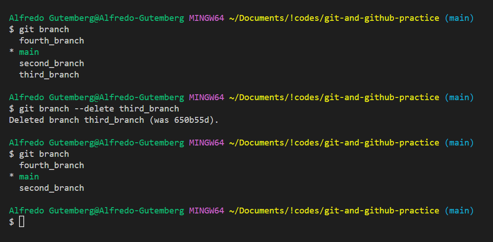

Git e Github
Home
Mudando de branches
-
Para mudar para outro branch utilizamos o comando
git checkout -b + nomeDaBranch
-
Este comando também é utilizado para dispensar mudanças de um arquivo
-
Alterando o Branch podemos levar alterações que não foram commitadas
junto, CUIDADO!
- Sempre verifique o estado dos commits com o git status
